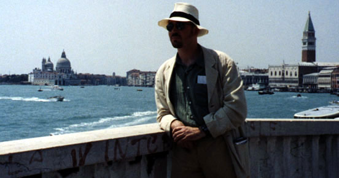
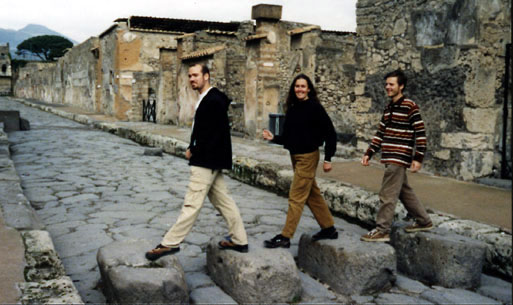

 The quintessential Piran in Venice shot.
By far my favourate place that I've ever ever been, even though I spent so little time there. Not that I didn't want to, it was just that the city was too romantic to see alone.
I shall have to make this my signature picture.
My first bit of independent travelling in Italy.
Everyone else does those silly tricks where by the pretend to be holding up the tower with their hands. We decided to turn that around, and try some pictures of people supporting it with their feet. However, you have to support the person who's upside-down first.
A long exposure in a moving boat... just to catch a colour that can't be described in words, and can't be caught on film.
Green and Red happen to be the team colours of one of the parties in the jousting tournament.
Do you realise, Venice and Pompeii must be the only two cities in the world without any cars.
To your left, my impression of my Latin teacher outside the house of Caecilius, who was the subject of our Latin books.
Below is Via Abbey (after the Beatles' Abbey Road), with Mark and Shannon.
